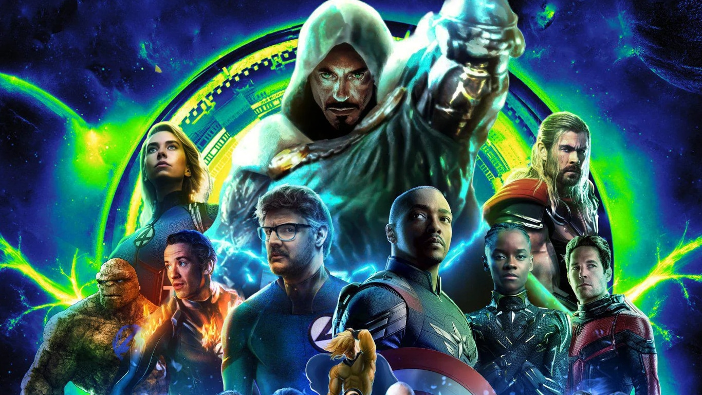

Filmes e séries
Vingadores: Doomsday

Depois de anos de ameaças cósmicas, rupturas no multiverso e a chegada de novos heróis ao MCU, os Vingadores precisam se reunir novamente diante de uma ameaça diferente de tudo que já enfrentaram: Victor von Doom, o Doutor Destino. Gênio científico, estrategista implacável e figura obcecada por controle, Doom surge como alguém capaz de transformar o caos do multiverso em uma nova ordem — mas sob o seu domínio.
Com o retorno de nomes como Steve Rogers, Thor, os X-Men, Wakanda e membros do Quarteto Fantástico, a batalha deixa de ser apenas pela Terra e passa a envolver o destino de várias realidades. Agora, antigos e novos heróis terão que se unir contra um vilão que não quer apenas destruir o mundo: ele quer reescrevê-lo à sua própria imagem.
O Diabo Veste Prada 2

Vinte anos depois dos acontecimentos do primeiro filme, Miranda Priestly continua no comando da Runway, mas agora enfrenta um inimigo que nem ela consegue intimidar facilmente: a decadência da mídia impressa. Com a revista perdendo força em um mundo dominado pelo digital, Miranda precisa se adaptar para manter seu império relevante.
Enquanto isso, Andy Sachs deixou de ser a jovem assistente insegura e se tornou uma editora influente. O reencontro entre Andy e Miranda reacende antigas tensões, mas também mostra que as duas mudaram muito desde a época em que trabalhavam juntas.
situação fica ainda mais complicada com Emily Charlton, agora uma executiva poderosa no mercado de luxo. Justamente ela controla o tipo de publicidade e patrocínio que Miranda precisa para salvar a Runway. Assim, antigas relações de poder se invertem, e o mundo da moda vira novamente um campo de batalha elegante, cruel e cheio de ironia.
O filme reúne Meryl Streep, Anne Hathaway, Emily Blunt e Stanley Tucci, com direção de David Frankel, o mesmo diretor do primeiro longa.
Música e Podcasts
The Weekend
.jpg )
Uma das músicas pop mais famosas dos últimos anos, “Blinding Lights” mistura batidas eletrônicas com uma estética inspirada nos anos 80. A canção ficou conhecida pelo ritmo marcante, clima nostálgico e pela voz intensa de The Weeknd, tornando-se um grande sucesso nas plataformas digitais.
PodPah

O Podpah é um dos podcasts brasileiros mais populares da internet. Com entrevistas descontraídas, humor e conversas sobre cultura, música, carreira e vida pessoal, o programa conquistou milhões de espectadores no YouTube e se tornou uma referência no entretenimento digital no Brasil.
Games e Tecnologia
Minecraft

Minecraft é um dos jogos mais famosos do mundo, conhecido pela liberdade de criação e exploração. Nele, o jogador pode construir casas, cidades, máquinas, fazendas e até mundos inteiros usando blocos. Além do modo sobrevivência, onde é preciso coletar recursos e enfrentar criaturas, o jogo também permite muita criatividade no modo criativo.
Fortnite

Fortnite é um jogo de ação e sobrevivência muito popular, principalmente pelo modo Battle Royale. Nele, vários jogadores competem em uma ilha até restar apenas um vencedor. O game se destaca por suas construções rápidas, eventos ao vivo, personagens famosos e atualizações constantes que mantêm a comunidade sempre ativa.